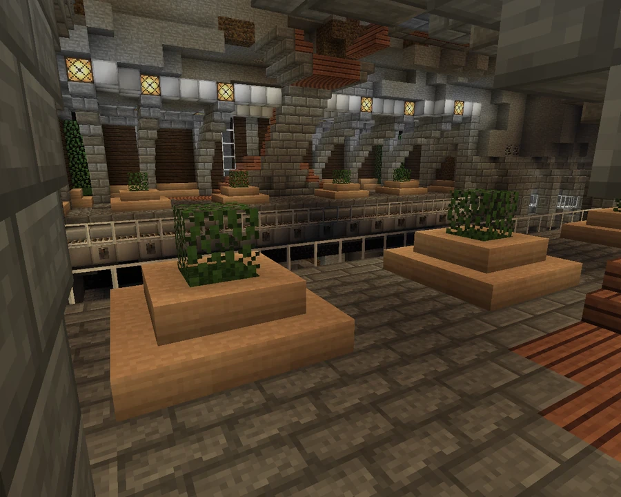

Boardwalk Station
A waterfront station. Community documentation lists it among the stops reused from the former Black Line.
Location and connections
Boardwalk Station lies east of Downtown, on the urban waterfront. Community documentation lists it among the stops reused from the former Black Line. On the purple metro diagram, it sits between BN Tower and Airport.



Station architecture
The station once stood inside one of the ravines beneath Broville, until the ravine was declared a nuisance and filled in. Its interior still retains a cave-like atmosphere.
The entrance is one of the network's largest, with a spacious, almost cathedral-like pavilion. The combination of this monumental entrance and the subterranean setting distinguishes the station.
Points of interest
The station is associated with the Arts District, Broville City Expo, Museum of Fine Arts, Broville Museum of Science and the waterfront boardwalk.
See also
Sources and references
- v11.4.4 maps, signs, books and items World records
- Boardwalk Subway Station · Broville Wiki Community archive
Text adapted and expanded from Boardwalk Subway Station (contributors and history, revision 4964). Adapted text is available under CC BY-SA 3.0.